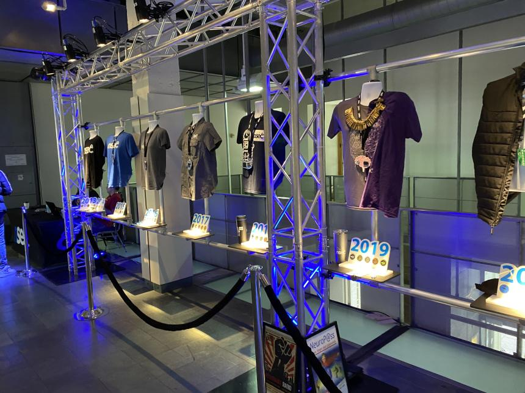
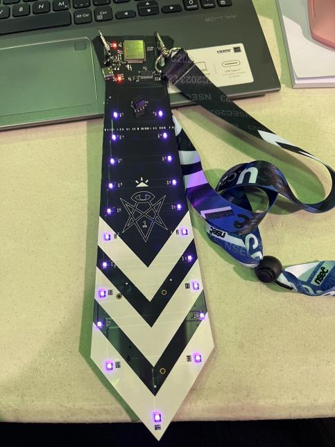
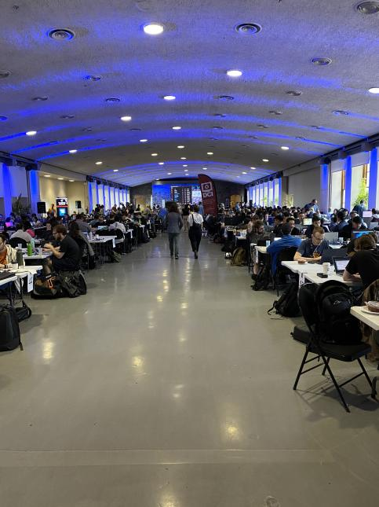

NorthSec 2023: A Novice's Journey into Cybersecurity
Table of Contents
NorthSec 2023: A Novice’s Journey into Cybersecurity
What is NorthSec?
NorthSec is Canada’s premier applied security event, designed to elevate the knowledge and technical expertise of professionals and students in the field of cybersecurity. The event comprises a two-day conference featuring presentations by industry experts, followed by an intense 48-hour on-site Capture The Flag (CTF) contest.
My First CTF Experience
Okay, where do I start?!
As a team of students with minimal preparation, we plunged headfirst into our first CTF at NorthSec 2023. The excitement was palpable as we stepped into the beautiful venue of Marche Bonsecours, located in the historic old port of Montreal. The professionalism of the event was evident from the moment we were greeted by a friendly volunteer who handed us our badges and commemorative 10th anniversary t-shirts.
photo provided by Jeffrey Bringolf
Being the 10th anniversary of Nsec, the old shirts and badges decorated the space between the big and the small room, a testament to the rich history of NorthSec.
PLEASE ORGANIZERS, MAKE THE SHIRTS AND BADGES AVAILABLE FOR PURCHASE!

photo provided by Jeffrey Bringolf
The Badge: A Work of TechArt
I must emphasize just how amazing the badges were, nothing short of spectacular. Designed in the shape of a tie to reflect this year’s ’evil corporation’ theme, the badges were embedded with an ESP32. Intriguingly, they contained several hidden flags, four of which remained undiscovered by any team!

The Challenges: A Test of Skill and Ingenuity
The challenges presented at the event were diverse and well-crafted, encompassing various aspects of cybersecurity such as web exploitation, reverse engineering, forensics, cryptography, and binary exploitation.
For beginners like us, the organizers had thoughtfully designed a beginner track. This track introduced us to the basics of CTFs and included challenges on HTML knowledge, local file inclusion, file upload bypass, SQL injection, SSRF, and redirection exploit. To our delight, we managed to capture all the flags in this track!
The event also featured unconventional challenges, including jackpotting a physical ATM and deciphering a digital clock, 3D printed and featuring the same ESP32, located on our tables. The sheer variety of challenges kept us on our toes, constantly questioning if there were hidden flags in the most unexpected places. We even started wondering if we could find flags under our chairs or inside the lcd displays! I am still convinced that the barcode on our shirts was a flag, but we never managed to find it.
My favorite track this year must have been the Dream Stream Server. Thanks to a hint from our alumni, I was pushed in the right direction - Autopsy software. After spending over an hour figuring it out and almost giving up, I manged to get inside the provided files and find several flags!
I honestly cannot describe the exhilaration of typing in and submitting a flag. It was a feeling of accomplishment and pride. I was so proud of myself and my team for getting this far.
The People : The Heart of the Event
The camaraderie and helpfulness of the attendees were the highlights of the event. Despite my initial apprehensions, I was welcomed into a community that was supportive and inclusive. The event served as a reminder that I was more than just a student; I was part of a vibrant and dynamic community.

photo provided by Jeffrey Bringolf
The Battle Against Sleep : Who Needs Sleep Anyway?
The CTF schedule was grueling, running from Friday evening until 3 am, resuming at 8 am on Saturday until 3 am, and then again from 8 am until 3 pm on Sunday. The struggle against sleep was a real challenge. Even though we never stayed until the official closing time of 3 am, most of us were still burning the midnight oil until around 2 am. Some of the more audacious among us even managed to show up bright and early at 8 am the following day.
As a team, we found ourselves jokingly questioning the necessity of sleep. After all, who needs sleep when you’re caught up in the thrill of a cybersecurity contest?
When the event concluded on Sunday and I arrived home around 7 pm, the sensible thing would have been to head straight to bed. But the adrenaline from the event hadn’t worn off yet. So, what did I do instead? I had dinner and rewatched this year’s NSEC Hacker Jeopardy on YouTube!
Was I exhausted? Absolutely. But would I do it all over again? Without a doubt. The experience, the learning, and the camaraderie far outweighed the temporary sleep deprivation. The memories we made at NorthSec 2023 will fuel us until we meet again at the next CTF.
The Food : A Rollercoaster of Flavors
The food experience was a mixed bag.
Friday night started strong with a wide selection of very unhealthy, but much needed snacks.
Saturday morning started very nicely with a wide selection of pastries, fruits, and coffee.
Sunday lunch, however, was a bit of a mess up. The food was very limited, and there was not enough for everyone. Whoever managed to get any, had one of two options : two hot dogs or a vegetarian falafel pita and garlic potatoes. The organizer brought some fries too, I an suspecting to compliment the hot dogs, but due to the limited quantity, we managed to get only a small baggie per team.
To make up for lunch, the organizers brought in some pizza for dinner. And they made up alright. If it is worth doing, it’s worth overdoing, right? I think there was enough pizza to feed a small army. We wondered by what supernatural force were all these boxes delivered to the venue.
Sunday started with coffee, bagels, and very bruised bananas. And within a few hours they ran out of coffee! Imagine, hundreds of very sleep deprived programmers, running on coffee and sheer willpower to finish the CTF as strongly as they can, and there was no coffee! I think we tried to scavenge for coffee about half a dozen times before it was refilled. Except, our small room must have angered the CTF gods as we got a jug of coffee but no milk to go with it! We ended up filling up with coffee in the small room and then making the track to the big room to get the milk.
I might have had a lot to say about the food, but I am very grateful that the organizers provided what they did. I am sure that they did their best to accommodate everyone, and I am very grateful for that.
The Results : Beyond the Byte
Our performance exceeded our expectations. We secured the 57th position out of 76 teams, a commendable achievement for our first CTF. This experience has fueled our determination to return next year and aim for an even better ranking!
In conclusion, NorthSec 2023 was an unforgettable journey into the world of cybersecurity. It was a platform that allowed us to learn, compete, and connect with like-minded individuals. Despite the challenges and sleep deprivation, the sense of accomplishment and camaraderie we experienced was unparalleled. We look forward to participating in NorthSec 2024 and further honing our skills in the field of cybersecurity.
See you next year, NorthSec!